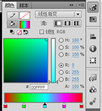

一．Flash制作实例—形变动画
1）新建影片→工具箱中选“文本工具”→属性面板中设置文本色为“红色”、字体为“华文行楷”、字号为120磅。
2）单击第1帧→在工作区写“大”字→在第30帧插入关键帧→写“小”字。
3）单击“洋葱皮”按钮组中“绘图纸外观”按钮 →将“小”字与“大”字冲齐→再次单击“绘图纸外观”按钮关闭“洋葱皮”。
4）分别在两个关键帧中选中文字，选中对象→“修改”菜单→“分离
5）单击两关键帧之间的任一帧→属性面板“补间”框中选“形状”。
6）拖动时间轴的播放头慢慢移动，可以看到“大”字变为“小”字的形变过程。
注意：形变动画的起止对象一定都是图形（Shape）。用Flash提供的工具画出的对象都是图形。如果对象是图形元件生成的实例，要把它转换为图形模式，方法：选中对象→“修改”菜单→“分离”
二．Flash制作实例—色彩动画
色彩动画是指动画的对象在运动时颜色发生改变，色彩动画是对关键帧动画、形变动画、运动动画的总结。Flash中的色彩有：无色、实色、线性渐变、点状渐变、图像填充。对于线型，只可以设置实色，像椭圆或矩形的边线还可以设置为无色。对于填充，所有的色彩设置都可以用。
例图片淡入（运动色彩动画）
1）在第1帧导入图片→选中对像→“修改”菜单→“转换成元件”（只有转换成组件，效果面板才可用）→对话框中选取“图形”项→“确定”；
2）选中图片→单击工具箱的“任意变形工具”→用鼠标调整图片大小使图片与工作区大小相同；
3）选中图片→属性面板的“颜色”框中选“Alpha”→Alpha的值选0%（完全透明）；
4）第30帧处插入关键帧→属性面板中Alpha的值选100%（不透明）；
5）右击1∼29帧之间任意帧→“创建传统补间动画”；（CS3为“创建补间动画”）
6） Enter键，可以看到图片的淡入效果；
三．Flash制作实例—遮罩动画
遮罩，其本质就是确定一个显示范围，从而产生特殊的动画效果。制作遮罩必须用两个层才能完成，上层是遮罩层，下层是被遮罩层，在遮罩层中的对象（如圆或矩形）不论什么颜色，都将成为透明区域，透过它可以看到被遮罩层的内容，遮罩层对象以外的区域将不透明，遮盖了被遮罩层的内容。《就是说：遮罩层遮盖的东西会是显示的，遮罩层没遮盖的东西将是不显示的，或者说想让什么东西显示出来就用遮盖层遮盖住。》
1）新建一个名为“再别康桥”的图形元件。工具箱中选择“文本工具”，并将文本的属性设置为楷体、36号字。输入徐志摩的《再别康桥》诗句。
2）新建一个名为“圆柱”的图形元件。在工具箱中选择“矩形工具”，将“笔触颜色”设置为无色，填充类型设置为过渡色，在颜色属性面板中，将填充样式设为“线性”。填充样式上共有5个滑块，颜色任意，Alpha值从左到右分别为0%、60%、100%、60%、0%，如图49所示。
注意：在填充样式条的空白处单击即可增加一个滑块，左键点击一个滑块拖动移开即可删除一个滑块。

图49 “圆柱”元件设置
3）拖动鼠标在工作区中画出一个矩形，并使用变形工具将其旋转90度，适当的修改大小（长度应大于“再别康桥”的图形元件的文本宽度）。
4）再新建一个名为“遮罩文字”的影片剪辑，从“库”面板中将“圆柱”元件拖入到工作区中心处，图层1的第1帧变为关键帧。在第240帧处单击右键，选择“插入帧”。
5）单击时间轴上的“插入图层”按钮，新建图层2。单击图层2的第1帧，将库中的“再别康桥”元件拖入到工作区，调整位置在圆柱的下方。
6）在图层2的第240帧处单击右键，选择“插入关键帧”，并修改该帧中文本的位置，使其位于圆柱的上方。在两个关键帧间的任意一帧上单击右键，选择“创建传统补间。播放动画可以看到，文字从圆柱上穿过。
7）在图层2上单击右键，选择“遮罩层”，将图层2变为图层1的遮罩。播放观看动画效果，可以通过在时间轴上添加帧或删除帧来放慢或加快文字的滚动速度。
四．综合练习
创作一个下落的小球，撞击地面后发生形变，并且反弹。